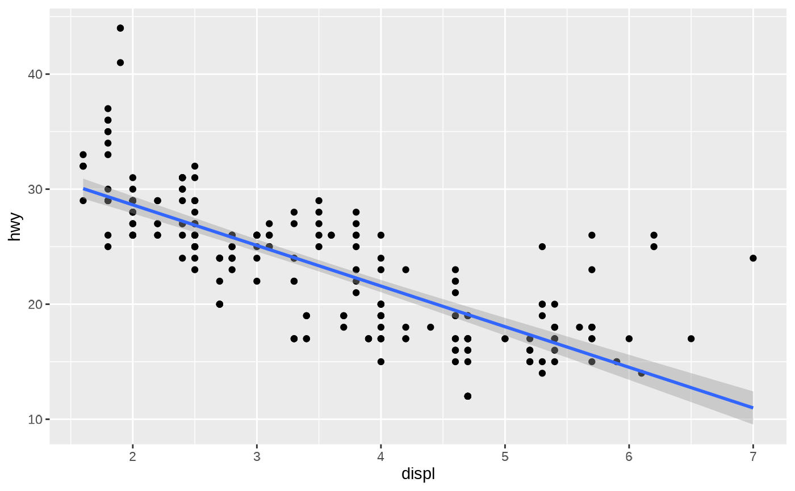

A wrapper for ggplot2::geom_smooth() that sets method to lm() and formula to y ~ x.
Usage
geom_lm(
mapping = NULL,
data = NULL,
position = "identity",
...,
method = "lm",
formula = y ~ x,
se = TRUE,
na.rm = FALSE,
orientation = NA,
show.legend = NA,
inherit.aes = TRUE
)Arguments
- mapping
Set of aesthetic mappings created by
aes(). If specified andinherit.aes = TRUE(the default), it is combined with the default mapping at the top level of the plot. You must supplymappingif there is no plot mapping.- data
The data to be displayed in this layer. There are three options:
If
NULL, the default, the data is inherited from the plot data as specified in the call toggplot().A
data.frame, or other object, will override the plot data. All objects will be fortified to produce a data frame. Seefortify()for which variables will be created.A
functionwill be called with a single argument, the plot data. The return value must be adata.frame, and will be used as the layer data. Afunctioncan be created from aformula(e.g.~ head(.x, 10)).- position
A position adjustment to use on the data for this layer. This can be used in various ways, including to prevent overplotting and improving the display. The
positionargument accepts the following:The result of calling a position function, such as
position_jitter(). This method allows for passing extra arguments to the position.A string naming the position adjustment. To give the position as a string, strip the function name of the
position_prefix. For example, to useposition_jitter(), give the position as"jitter".For more information and other ways to specify the position, see the layer position documentation.
- ...
Other arguments passed on to
layer()'sparamsargument. These arguments broadly fall into one of 4 categories below. Notably, further arguments to thepositionargument, or aesthetics that are required can not be passed through.... Unknown arguments that are not part of the 4 categories below are ignored.Static aesthetics that are not mapped to a scale, but are at a fixed value and apply to the layer as a whole. For example,
colour = "red"orlinewidth = 3. The geom's documentation has an Aesthetics section that lists the available options. The 'required' aesthetics cannot be passed on to theparams. Please note that while passing unmapped aesthetics as vectors is technically possible, the order and required length is not guaranteed to be parallel to the input data.When constructing a layer using a
stat_*()function, the...argument can be used to pass on parameters to thegeompart of the layer. An example of this isstat_density(geom = "area", outline.type = "both"). The geom's documentation lists which parameters it can accept.Inversely, when constructing a layer using a
geom_*()function, the...argument can be used to pass on parameters to thestatpart of the layer. An example of this isgeom_area(stat = "density", adjust = 0.5). The stat's documentation lists which parameters it can accept.The
key_glyphargument oflayer()may also be passed on through.... This can be one of the functions described as key glyphs, to change the display of the layer in the legend.
- method
Smoothing method (function) to use, accepts either
NULLor a character vector, e.g."lm","glm","gam","loess"or a function, e.g.MASS::rlmormgcv::gam,stats::lm, orstats::loess."auto"is also accepted for backwards compatibility. It is equivalent toNULL.For
method = NULLthe smoothing method is chosen based on the size of the largest group (across all panels).stats::loess()is used for less than 1,000 observations; otherwisemgcv::gam()is used withformula = y ~ s(x, bs = "cs")withmethod = "REML". Somewhat anecdotally,loessgives a better appearance, but is \(O(N^{2})\) in memory, so does not work for larger datasets.If you have fewer than 1,000 observations but want to use the same
gam()model thatmethod = NULLwould use, then setmethod = "gam", formula = y ~ s(x, bs = "cs").- formula
Formula to use in smoothing function, eg.
y ~ x,y ~ poly(x, 2),y ~ log(x).NULLby default, in which casemethod = NULLimpliesformula = y ~ xwhen there are fewer than 1,000 observations andformula = y ~ s(x, bs = "cs")otherwise.- se
Display confidence interval around smooth? (
TRUEby default, seelevelto control.)- na.rm
If
FALSE, the default, missing values are removed with a warning. IfTRUE, missing values are silently removed.- orientation
The orientation of the layer. The default (
NA) automatically determines the orientation from the aesthetic mapping. In the rare event that this fails it can be given explicitly by settingorientationto either"x"or"y". See the Orientation section for more detail.- show.legend
logical. Should this layer be included in the legends?
NA, the default, includes if any aesthetics are mapped.FALSEnever includes, andTRUEalways includes. It can also be a named logical vector to finely select the aesthetics to display.- inherit.aes
If
FALSE, overrides the default aesthetics, rather than combining with them. This is most useful for helper functions that define both data and aesthetics and shouldn't inherit behaviour from the default plot specification, e.g.borders().
Examples
library(ggplot2)
ggplot(mpg, aes(displ, hwy)) +
geom_point() +
geom_lm()
